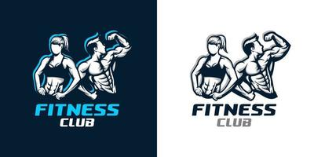

Consejos Nutricionales
Publicado el 16 de Septiembre de 2023 por Junior Hernandez
1.Consuma una variedad de alimentos:
Come una amplia gama de alimentos, incluyendo frutas, verduras, granos enteros, proteínas magras y productos lácteos bajos en grasa. Esto asegura que obtendrás una variedad de nutrientes esenciales.
2.Controla las porciones:
Presta atención al tamaño de las porciones para evitar el exceso de calorías. Utiliza platos
3.Come regularmente:
Trata de comer comidas equilibradas y meriendas a intervalos regulares durante el día. Esto ayuda a mantener estables los niveles de azúcar en sangre y evita los antojos.
4.Hidratación:
Bebe suficiente agua a lo largo del día. A veces, la sed se confunde con el hambre, por lo que es
5.Reduzca el consumo de azúcar y alimentos procesadores:
Limite la ingesta de azúcar refinado,
6.Aumenta el consumo de fibra:
Los alimentos ricos en fibra, como los granos enteros, las legumbres, las frutas y las verdes.
7.Incluye proteínas magras:
Incorpora
8.Controla el consumo de grasas:
Las grasas monoinsaturadas y poliinsaturadas también son saludables para el corazón, están contenidas en: Aguacate. Nueces y semillas: almendras, nueces pacanas, cacahuates, piñones, semillas de calabaza, semillas de ajonjolí o girasol. Aceite de oliva y aceitunas.
9.Planifica tus comidas:
La preparación del plan de la comida requiere un poco de tiempo, pero es mucho mayor el tiempo que puedes ahorrar. Cuántas veces te has preguntado ¿Qué cocinaré este día?, ¿Qué prepararé para la cena? Con un plan listo, este dilema ya no existe. Cada vez empiezas a trabajar de inmediato. Además, al tener la lista, acortas significativamente el tiempo necesario para realizar las compras.
10.Escucha a tu cuerpo:
Presta atención a las señales de hambre y saciedad de tu cuerpo. Come cuando tengas hambre y deja de comer en exceso.
11.Evite las dietas extremas:
Las dietas extremadamente restrictivas suelen ser insostenibles a largo plazo. En lugar de eso, has esto, la clave está en centrarse en una alimentación completa priorizando los vegetales, limitando el consumo de carne y consumiendo mucha fruta, granos enteros, legumbres, grasas buenas, frutos secos y semillas para saciarnos y no sufir ataques de ansiedad. La clave está en sentirnos llenos con alimentos que tienen pocas calorías con el objetivo de adelgazar. Si ves resultados con este tipo de alimentación no te sentirás tentado de acudir a las dietas milagro.
12.Consulta a un profesional:
Te gustaria saber mas y tener excelentes resultados, unete a nuestro, contactanos con el boton que esta abajo y con todo gusto te atenderemos.
contactanos

Titulo del Segundo Artículo
Publicado el 18 de Septiembre de 2023 por Ana Sánchez
Este es el contenido del segundo artículo de mi blog. Sed posuere, turpis et laoreet efficitur.
Leer Más